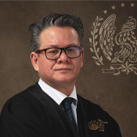

Luis Efrén Ríos Vega
Magistrado de la Sala Penal
Formación Académica
- Licenciado en Derecho
- 28 enero 2016: Doctorado en Estudios Avanzados en Derechos Humanos por la Universidad Carlos III de Madrid, con la tesis La privación del sufragio. El debate de la ley del miedo electoral, aprobado por unanimidad con categoría sobresaliente (“cum laude”) en Getafe, Madrid, España.
- 19 febrero 2008: Maestría en Estudios Avanzados en Derechos Humanos por el Instituto de Derechos Humanos “Bartolomé de las Casas” de la Universidad Carlos III de Madrid, con la tesis La regla del perfil idóneo. Un debate sobre el gobierno de los mejores, aprobado por unanimidad con calificación sobresaliente en Getafe, Madrid, España.
- 19 noviembre 2015: Maestría en Derecho Fiscal por la Universidad Autónoma de Coahuila en Saltillo, Coahuila, México.
- 1996-1999: Estudios concluidos de la Maestría en Ciencias Penales en la Facultad de Derecho y Ciencias Sociales de la Universidad Autónoma de Nuevo León. División de Postgrado, Monterrey, Nuevo León.
- 24 mayo 1994: Egresado de la Licenciatura en Derecho de la Facultad de Jurisprudencia de la Universidad Autónoma de Coahuila. Saltillo. Generación 1989-1994, bajo la modalidad de tesis con el La Garantía de la Orden de Aprehensión, aprobado por unanimidad el examen profesional con mención honorífica.
- Cédula profesional No. 2165230, de fecha 8 de septiembre de 1995, expedida por la Secretaría de Educación Pública. Dirección General de Profesiones.
- Cédula de Registro bajo el No. 3132, del libro VII de fecha 26 de junio de 1995, ante el Tribunal Superior de Justicia del Estado de Coahuila.
- 2002: Diplomado en “Análisis Político Estratégico” impartido por la Universidad Iberoamericana y el Departamento de Ciencia Política y de la Administración II de la Universidad Complutense de Madrid.
- 2003: Diplomado en “Instituciones Democráticas y Sociedad Civil” impartidos en el Instituto Tecnológico Autónomo de México, el Centro de Investigación y Docencia Económicas y el Colegio de México.
Experiencia Laboral
- (2015-2019) Director General de la Academia Interamericana de Derechos Humanos.
- 23 febrero 2017: Miembro del Grupo Autónomo de Trabajo para el Diálogo entre el Gobierno del Estado y las Familias de Personas Desaparecidas en Coahuila.
- 24 septiembre 2014: Comisionado Presidente de la Comisión Ejecutiva Estatal de Atención a Víctimas del Gobierno del Estado de Coahuila de Zaragoza.
- 6 noviembre 2012: Director de la Facultad de Jurisprudencia de la Universidad Autónoma de Coahuila, Saltillo, Coahuila.
- 1 junio 2004 – 31 mayo 2005: Coordinador de Enlace Legislativo del Gobierno del Estado de Coahuila.
- 11 mayo 2000 – 1 diciembre 2004: Director de Asuntos Legislativos del Gobierno del Estado de Coahuila.
- 23 enero 1998 – 5 enero 2000: Secretario General de Acuerdos del Tribunal Superior de Justicia y del Consejo de la Judicatura.
- 1 junio 1996: Secretario de Estudio y Cuenta de la Sala Penal del Tribunal Superior de Justicia, Saltillo, Coahuila.
- 14 septiembre 1995 – 31 enero 1996: Secretario de Acuerdo y Trámite del Juzgado de Sabinas, Coahuila.
- 1 julio 1995 – 30 septiembre 1995: Secretario Interino de Acuerdo y Trámite del Juzgado Penal, Saltillo, Coahuila.
- 3 enero 1994 – 6 febrero 1995: Defensor de Oficio en Materia Penal Adscrito, Saltillo, Coahuila.
Producción Científica
Libros de Autoría
- (2019) L.E. Ríos Vega, La privación del sufragio: El debate contemporáneo en México, Tirant Lo Blanch, México (en prensa).
- (2019) L.E. Ríos Vega, “as candidaturas peligrosas: una perspectiva comparada”, Tirant Lo Blanch, México (en prensa).
- (2016) L.E. Ríos Vega, Debates actuales del federalismo electoral. Una visión regional, Tirant Lo Blanch, México.
- (2014) L.E. Ríos Vega, Rehabilitación del sufragio. El debate de la condena condicional, Tribunal Electoral del Poder Judicial de la Federación.
- (2011) L.E. Ríos Vega, Tópicos electorales. Un diálogo judicial entre América y Europa, Centro de Estudios Políticos Constitucionales.
- (2010) L.E. Ríos Vega, Sufragio pasivo, inmunidad parlamentaria y delincuencia organizada. El caso Godoy, Porrúa, México.
- (2010) L. E. Ríos Vega, El derecho a la rehabilitación de los derechos políticos. El caso Hernández, Tribunal Electoral del Poder Judicial de la Federación.
- (2010) L. E. Ríos Vega, Tópicos Contemporáneos de Derechos Políticos Fundamentales, Dykinson, L.S.
- (2008) L. E. Ríos Vega, La sanción partidista en el PAN: El caso González, Tribunal Electoral del Poder Judicial de la Federación.
Libros en Coautoría
- (2019) L.E. Ríos Vega, I. Spigno (dirs.), La crisi dei diritti umani. la visione della giustizia regionale, Editoriale Scientifica, Napolés, (en prensa), ISBN: 978-88-9391-607-3.
- (2019) L.E. Ríos Vega, I. Spigno (dirs), M.Y. Robles Garza, E. Román González (coords.), Estudios de casos líderes interamericanos. Vol. XIII. México ante la Corte Interamericana de Derechos Humanos: a 20 años de la aceptación de su competencia contenciosa, Tirant lo Blanch, México, 2019 (en prensa), ISBN: 978-84-1336-424-7.
- (2019) L.E. Ríos Vega, I. Spigno (dirs), Estudios de casos líderes europeos. Vol. XII. Cuestiones actuales del derecho a la vida privada y a la protección de datos personales en el Tribunal Europeo de Derechos Humanos, Tirant lo Blanch, México, (en prensa), ISBN: 978-84-1336-092-8.
- (2019) L.E. Ríos Vega, I. Spigno (dirs), Estudios de casos líderes nacionales. Vol. XI. Los derechos de la familia y de la niñez en la jurisprudencia de la Suprema Corte de Justicia de la Nación, Tirant lo Blanch, México, (en prensa) ISBN: 978-84-1313-713-1.
- (2019) L.E. Ríos Vega, I. Spigno (dirs), Estudios de casos líderes interamericanos. Vol. X. Los derechos de las víctimas de desaparición forzada de personas en la jurisprudencia de la Corte Interamericana de Derechos Humanos, Tirant lo Blanch, México, (en prensa) ISBN: 978-84-1313-711-7.
- (2019) L.E. Ríos Vega, I. Spigno (dirs), Estudios de casos líderes nacionales. Vol. IX. Cuestiones actuales de la neutralidad gubernamental, Tirant lo Blanch, México, (en prensa) ISBN: 978-84-1313-715-5.
- (2019) L. E. Ríos Vega, I. Spigno (dirs.), Estudios de casos líderes nacionales. Vol.VIII. Cuestiones actuales de los delitos electorales, Tirant lo Blanch, México, (en prensa), ISBN: 978-84-1313-690-5.
- (2019) L.E. Ríos Vega, I. Spigno (dirs.), Estudios de casos líderes interamericanos. Vol. VII. La libertad de expresión en el sistema interamericano de derechos humanos, Tirant lo Blanch, México, (en prensa), ISBN: 978-84-1313-654-7.
- (2019) L.E. Ríos Vega, I. Spigno (dirs), Estudios de casos líderes nacionales. Vol. VI. La libertad de expresión en la democracia electoral mexicana, Tirant lo Blanch, México, (en prensa), ISBN: 978-84-1313-578-6.
- (2019) L.E. Ríos Vega, I. Spigno (dirs), Estudios de casos líderes nacionales. Vol. V. Los Derechos Humanos en la jurisprudencia de la Suprema Corte de Justicia de Nación de México, Tirant lo Blanch, ISBN: 978-84-1313-191-7.
- (2019) L.E. Ríos Vega, I. Spigno (dirs), Estudios de casos líderes interamericanos y europeos. Vol. IV. Derechos de los migrantes / Derecho a la conformación de los partidos políticos/ Derechos reproductivos / Derechos LGBTI+, Tirant lo Blanch, México, (en prensa) ISBN: 978-84-1313-709-4.
- (2019) L.E. Ríos Vega, I. Spigno (dirs), Estudios de casos líderes interamericanos y europeos. Volumen III. Problemas actuales de la justicia regional. Una visión comparada entre América y Europa, Tirant lo Blanch, México. ISBN: 978-84-1313-177-1.
- (2019) L.E. Ríos Vega, I. Spigno (dirs), Estudios de casos líderes interamericanos y europeos. Vol. II. El derecho a la salud/los derechos culturales/el derecho al nivel de vida adecuado/los derechos de la familia y de la niñez/el derecho a la movilidad humana/los derechos a la libertad e integridad personal, Tirant lo Blanch, México. ISBN: 978-84-9190-772-5.
- (2019) L. E. Ríos Vega, I. Spigno, (dirs) El Constitucionalismo Social Mexicano. Una visión histórica, Tirant lo Blanch. ISBN: 978-84-1313-189-4.
- (2019) L. E. Ríos Vega, I. Spigno, (dirs.) Educación Jurídica y Derechos Humanos. La enseñanza del derecho en el siglo XXI, Tirant lo Blanch, México. ISBN: 978-84-1313-576-2.
- (2019) L.E. Ríos Vega, I. Spigno (dirs.), Gobierno Abierto y derechos humanos, Tirant lo Blanch, México. ISBN: 978-84-1313-485-7.
- (2019) L.E. Ríos Vega, I. Spigno (dirs.), El sufragio en las pantallas. Perspectivas actuales de los derechos políticos desde el cine, Tirant lo Blanch, México. ISBN: 978-84-1313-574-8.
- (2019) L.E. Ríos Vega, I. Spigno (dirs.), O. Flores Torres (coord.), Madero: Padre Fundador de la Democracia. Una lectura contemporánea, Porrúa, México (en prensa). ISBN: 978-607-524-290-3
- (2019) L. E. Ríos Vega, I. Spigno, (dirs), S. Díaz Rendón, M.Y. Robles Garza (coords.), Vademécum de Derechos Humanos, Tirant lo Blanch, 2019. ISBN: 9788491697183.
- (2018) L. E. Ríos vega-I. Spigno (dirs.), El INAI. Resoluciones relevantes y polémicas (12 casos líderes), Tirant lo Blanch, México. ISBN: 978-84-1313-109-2.
- (2018) L.E. Ríos Vega, R. Rodríguez Mondragón, I. Spigno (dirs.), Justicia Abierta, Educación Jurídica y Derechos Humanos, Tirant lo Blanch, México. ISBN: 9788491695325.
- (2017-2018) L.E. Ríos Vega, I. Spigno (compiladores) Derechos Humanos Siglo 21. Compilación de artículos de opinión. AIDH y Vanguardia MX.
- (2017) L.E. Ríos Vega, (cood.) La justicia constitucional de los derechos políticos. Una agenda contemporánea. Restricción del sufragio/Lacidad electoral/Paridad de género/Propaganda Política. Tirant lo Blanch, México. ISBN:978-84-9143-993-6.
- (2017) L.E. Ríos Vega, I. Spign (dirs), Mariano Otero, el diplomático. Dos lecturas del Derecho a la asistencia consular, Tirant lo Blanch, México. ISBN: 978-84-9169-518-9.
- (2016) L.E. Ríos Vega, I. Spigno (dirs), Estudios de casos líderes interamericanos y europeos. Vol. I. Libertad religiosa/ Libertad de expresión/Derechos económicos, sociales y culturales/derechos de las personas desaparecidas, Tirant lo Blanch, México. ISBN: 978-84-9119-660-0.
- (2016) L. Ríos Vega, C. Báez Silva, (coord.) El proceso electoral (2012) Las polémicas judiciales Tirant Lo Blanch, México.
- (2012) L. E. Ríos Vega, I. Spigno (coord.), La elección presidencial en México, Tirant Lo Blanch, México.
- (2014) L. Ríos Vega, C. Báez Silva, (coord.) Cuestiones actuales de la democracia electoral, Tirant Lo Blanch, México.
- (2014) L. Ríos Vega, C. Báez Silva, (coord.) Los derechos políticos en el Siglo XXI, Un debate judicial, Tirant Lo Blanch, México.
- (2013) L. Ríos Vega, C. Báez Silva, (coord.) Ciudadanía, Derechos políticos y justicia electoral en México, Marcial Pons, México.
Artículos
- (2017) El canon europeo e Interamericano de la privación del sufragio pasivo en Cuestiones constitucionales Revista Mexicana de Derecho Constitucional. Vol.
- (2010) Elecciones libres y candidaturas golpistas en revista envío.
- (2009) ¿matar inocentes para salvar a otros? El caso del avión-bomba en Derechos y libertades Vol., 187.
- (2009) El transfuguismo electoral en el sistema presidencial mexicano en Justicia Electoral. Vol. 1, 75.
- (2007) Moralidad sexual y Derecho: moralismo, individualismo y garantismo en Universitas. Revista de Filosofía, derecho y política. Vol 6, julio 2007.
Capítulos de libros
- (2017) La residencia efectiva para poder ser electo. EL caso Xóchitl Gálvez, La justicia de los derechos políticos. Una agenda contemporánea, Tirant Lo Blanch, México.
- (2017) Art. 30 scopo delle limitazioni. Comentario a la prima parte della Convenzione americana deli dirimitti umani, Editoriale Scientifica.
- (2016) La privación del sufragio como causal de nulidad en Debates actuales del federalismo electoral. una visión regional, Tirant Lo Blanch, México.
- (2015) La mediación como elemento central de la justicia restaurativa en materia de derechos humanos, en La multidisciplinariedad de la mediación y sus ámbitos de aplicación, Tirant Lo Blanch, México.
- (2015) Derribar el avión bomba: ¿números, oportunidades o salvables? En Aviones usados como bombas, Catarata.
- (2014) El problema de las encuestas en la elección presidencial 2012 en La elección presidencial en México (2012), Tirant Lo Blanch, México.
- (2014) El cargo popular como impedimento para ser votado, en Cuestiones actuales de la democracia electoral, Tirant Lo Blanch, México.
- (2014) La suspensión preventiva del sufragio pasivo: ¿prisión, libertad o proporcionalidad?, en los derechos políticos en el siglo XXI. Un debate judicial, Tirant Lo Blanch, México.
- (2013) Las cortes locales de derechos humanos. Una propuesta a desarrollar, en Memoria de la séptima mesa redonda sobre justicia constitucional en las entidades federativas.
- (2013) La cláusula de igualdad de género en el derecho de las mujeres a acceder a la función electoral, en Ciudadanía derechos políticos, justicia electoral en México, Marcial Pons, México.
- (2011) La regla de la propaganda fraudulenta. Libertad, equidad y neutralidad en los medios en Tópicos electorales. Un diálogo entre América y Europa, Centro de Estudios Políticos.
- (2011) El debate de la suspensión del sufragio activo por causa penal. La doctrina Pedraza, en Tópicos electorales. Un diálogo judicial entre América y Europa, Centro de Estudios Políticos.
- (2010) Elecciones libres y candidaturas golpistas, en El golpe de estado en Honduras desde una perspectiva de los derechos humanos, Casa Sam Ignacio.
- (2010) El matrimonio del mismo sexo, en Temas actuales de los derechos humanos, FUNDAP.
- (2003) La garantía jurisdiccional de la constitucionalidad local: pasado, presente y futuro, en Justicia constitucional local, FUNDAP.
Participación en congresos, foros y seminarios
- (2019) Participación en el Observatorio Interamericano de Derechos Humanos, “La Jurisprudencia de la Corte Interamericana de Derechos Humanos del 2018 a debate” con la conferencia “Desaparición Forzada de Personas, Bogotá, Colombia a 22 de agosto de 2019.
- (2018) Participación en el Observatorio Internacional de Derechos Humanos Justicia &Culture Legal Techniques and arguments to deal with multicultural conflicts con la conferencia “On the importance of studying case-law” Cagliari, Italia, 12 de mayo de 2018.
- (2018) Participación en el Congreso CEEAD sobre Educación Jurídica 2018 como moderador en la mesa “Desarrollo de competencias docentes”, Puebla, Puebla a 27 de marzo de 2018.
- (2018) Participación como moderador en la Mesa III Derechos de las Familias de Personas Desaparecidas, Foro Nacional para la Implementación de la Ley General de Desaparición Forzada de Personas, Arteaga, Coahuila
- (2017) Participación como ponente en la mesa I, Derechos de la Personalidad Jurídica e Identidad, Los derechos de las víctimas de desaparición de personas en el sistema interamericano, III Observatorio Internacional de Derechos Humanos, Saltillo, Coahuila.
- (2017) Participación en el Seminario 200 años del nacimiento de Mariano Otero el diplomático, Una lectura contemporánea del derecho consular” con la conferencia 2 El debate actual del derecho a la asistencia consular”, Saltillo, Coahuila a 4 de agosto de 2017.
- (2017) Participación en las Jornadas del Constitucionalismo Social Mexicano: Pasado, Presente y Futuro, II Jornada, con la Conferencia “El pensamiento de los padres constituyentes de Coahuila en el Congreso de 1917”, 7 de junio de 2017.
- (2016) ponencia: Problemas actuales de la desaparición de personas. El caso mexicano, en el taller sobre el Derecho y la Justicia, 4 de marzo, Madrid España.
- (2016) ponencia: Aspectos político-criminales y dogmáticos de los delitos electorales, 12 y 13 de septiembre en el II Observatorio de Derechos Políticos “problemas actuales de los delitos electorales”, México.
- (2016) ponencia: La Libertad de expresión, medios de comunicación y periodistas 30 noviembre y 1 diciembre en el II Observatorio Internacional de Derechos Humanos, tercera jornada “La libertad de expresión en el sistema interamericano”, Saltillo Coahuila, México.
- (2016) ponencia: Los derechos humanos de los migrantes, 27 y 28 de octubre en el II Observatorio Internacional de Derechos Humanos (segunda jornada) “Los derechos humanos en situaciones de crisis” Siena, Italia.
- (2016) ponencia: La forme atipiche di sparizione forzata di persone, 10 de marzo en la Universidata’ Di Milano-Bicocca.
- (2016) ponencia: Análisis del caso Herri Batasuna y Batasuna vs España, 7 y 8 de marzo en el II Observatorio Internacional de Derechos Humanos “Diálogo jurisprudencial entre América y Europa”, Madrid España.
- (2016) participación en la 4ª Feria Internacional del Libro del Tribunal Electoral del Poder Judicial de la Federación, Ciudad de México, México.
- (2015) ponencia: Las actuales tendencias constitucionales en la protección de los derechos en México e Italia: ¿un diálogo ininterrumpido?, 5 de febrero en la “II Giornata italo – brasiliana di Diritto Publico Comparato” de la Università Di Siena, Siena, Italia.
- (2015) ponencia: La privación del sufragio. Un debate filosófico, constitucional y comparado, en el sistema constituzionalli comprati, 14 de enero, Universidad de Génova, Italia.
- (2015) ponencia: El canon europeo e interamericano sobre privación del sufragio, 18, 19 y 20 de noviembre en el Seminario Internacional “Globalización y crisis normativa: hacia el cambio constitucional”, Alicante, España.
- (2015) ponencia: Gobierno abierto en México: Una aproximación a las experiencias administrativa, legislativa y judicial, 18 de diciembre en la Universidad Carlos III de Madrid, Getafe (Madrid) España.
- (2015) ponencia: La privación del Sufragio, 25 de noviembre en el VIII Seminario Internacional del Observatorio Judicial Electoral, Ciudad de México, México.
- (2015) participación como moderador en el VIII Seminario Internacional del Observatorio Judicial Electoral 26 de noviembre en el Tribunal Electoral del Poder Judicial de la Federación, Ciudad de México, México.
- (2015) participación en la 3ª Feria Internacional del libro del Tribunal Electoral del Poder Judicial de la Federación, 14 de abril en la Ciudad de México, México.
- (2015) participación en las Jornadas de Derecho comparado y control de convencionalidad, 17 de febrero en la sala regional especializada del Tribunal Electoral del Poder Judicial de la Federación, Ciudad de México, México.
- (2014) participación en el Seminario Internacional La desaparición de personas y los derechos humanos en México, llevado a cabo el 9 de diciembre, en la Universidad Torcuato Di Tella, Buenos Aires, Argentina.
- (2014) ponencia: Interpretación constitucional. Diálogos América y Europa, 7 de julio en las instalaciones de la Casa de la Cultura Jurídica de Mérida, Yucatán.
- (2014) ponencia: Ciudadanía, derechos políticos y justicia electoral en México, 11 de junio en el Seminario Internacional “Los derechos humanos en el Siglo XXI. Experiencias México – España”, Alicante, España.
- (2014) ponencia: Los tratados internacionales en materia de derechos humanos: un debate filosófico, constitucional y comparado, 8 y 9 de octubre, en el I Coloquio Internacional sobre Filosofía y Derecho, Monterrey Nuevo León, México.
- (2014) ponencia: La legislación de los derechos de las víctimas. Perspectivas, experiencias y retos en el estado mexicano, 17 de febrero en Saltillo, Coahuila, México.
- (2014) participación como ponente en el VII Seminario Internacional del Observatorio Judicial Electoral con el Tribunal Electoral del Poder Judicial de la Federación, Ciudad de México, México.
- (2014) participación en el simposium “Hacia una construcción de una ley general de archivos”, 5 agosto en Saltillo, Coahuila México.
- (2014) participación con la conferencia Nueva Ley de Acceso a la información pública y protección de datos personales para el estado de Coahuila de Zaragoza, 12 de julio en el Instituto Coahuilense de Acceso a la Información Pública y la Asociación de Licenciadas en Derecho del Estado de Coahuila, México.
- (2014) participación con la conferencia Actualización en Derecho Electoral, 12 de abril en la Secretaria de Acción Electoral, México.
- (2014) participación con la conferencia La reforma constitucional en materia de transparencia gubernamental, 20 de febrero en la Secretaria de Fiscalización y Rendición de Cuentas del Gobierno de Coahuila y el Instituto Coahuilense de Acceso a la Información, México.
- (2014) participación con la conferencia: La reforma constitucional en materia de transparencia, 6 de febrero en la Secretaría de Fiscalización y Rendición de Cuentas del Gobierno del Estado de Coahuila, México.
- (2013) participación como ponente en el Congreso Nacional de Candidaturas Independientes los días 24 y 25 de octubre en Pachuca, Hidalgo, México.
- (2013) ponencia: La reforma electoral que viene, 24 de octubre en el Coloquio de especialistas en materia electoral, Estado de Guerrero, México.
- (2013) Participación con conferencia en el Foro de Consulta de Programa Educativo 2013: Licenciado en Derecho La enseñanza del derecho en el siglo XXI, 13 de junio en el Consejo de Vinculación Universidad Empresa Coahuila sureste a través de su comité de desarrollo de perfil académico.
- (2013) Participación en las audiencias públicas para la elaboración, desarrollo y validación del programa de derechos humanos del estado de Coahuila de Zaragoza, 9 mayo con la Unidad de Derechos Humanos del Ejecutivo del Gobierno del estado de Coahuila, México.
- (2013) participación en el Foro Reforma Electoral 2013: los retos para la gobernabilidad democrática, 13 marzo en la H. Cámara de diputados.
- (2012) ponencia: La elección presidencial mexicana de 2012. Cuestiones constitucionales, 8 de mayo en la Facultad de Derecho de la Universidad de Valladolid, Valladolid España.
- (2012) ponencia: La sucesión presidencial en México 2012: rostros democráticos y autoritarios, 25 de abril en la Universidad de Barcelona, España.
- (2012) ponencia: Los problemas constitucionales de la elección presidencial en México (2012), 22 mayo en el Tribunal Constitucional de España, Madrid, España.
- (2012) participación como ponente en el Seminario México en Cádiz 200 años después: Libertades y Democracia en el constitucionalismo contemporáneo, 26 y 27 de abril; 3 y 4 mayo en Ciudad de México, México.
- (2012) Participación en el Bicentenario de la promulgación de la Constitución de Cádiz, 29 de marzo en el Congreso del Estado independiente, libre y soberano de Coahuila de Zaragoza, México.
- (2011) ponencia: Neutralidad o pluralismo de los medios, 10 mayo en el marco del Ciclo de Conferencias “Problemas actuales de la libertad de información en materia electoral”, Puebla, México.
- (2011) participación como ponente en la 7ª mesa redonda sobre Justicia Constitucional en las Entidades Federativas, 22 y 23 de septiembre en Guadalajara Jalisco, México.
- (2011) participación como ponente en el I Observatorio Judicial Electoral con el Tribunal Electoral del Poder Judicial de la Federación, ciudad de México, México.
- (2011) participación como ponente en el I Congreso Internacional de Derecho Procesal Penal Acusatorio, 22 al 24 de septiembre en la ciudad de Acapulco, Guerrero, México.
- (2011) participación como ponente en el Foro “La Democracia Participativa como Auténtica Fuerza del Pueblo”, 11 de abril en el palacio Legislativo de San Lázaro, Ciudad de México, México.
- (2011) participación como ponente en el foro “Reforma política, cambio estructural de la vida social en México”, 11 julio en Mérida Yucatán, México.
- (2011) participación en el evento “Tópicos contemporáneos de derechos políticos fundamentales”, 21 de octubre con el Instituto Electoral y de Participación ciudadana de Coahuila.
- (2011) Participación como facilitador en el taller: Problemas actuales de la libertad de expresión en materia electoral, 7 junio en el Tribunal Electoral del Poder Judicial de la Federación, Ciudad de México, México.
- (2011) Participación con la conferencia: Sufragio pasivo, inmunidad parlamentaria y delincuencia organizada. El caso Godoy, 27 de mayo con la Fundación Universitaria de Derecho, Administración pública y política.
- (2011) Participación como facilitador del taller: Problemas actuales de la libertad de expresión en materia electoral, 6 de abril en el Tribunal Electoral del Poder Judicial de la Federación, Ciudad de México.
- (2011) Participación como comentarista del libro Tópicos contemporáneos de derechos políticos fundamentales, 1 de febrero en la Universidad Autónoma de Nuevo León, México.
- (2010) ponencia: Los derechos políticos como derechos humanos en el Siglo XXI, 10 diciembre en la Comisión Estatal de Derechos Humanos de Jalisco, Guadalajara Jalisco, México.
- (2010) participación con la ponencia: Los derechos políticos de las clases peligrosas. Una perspectiva filosófica, constitucional y comparada, dentro del programa de Postgrado de Estudios Avanzados en Derechos Humanos del Instituto de Derechos Humanos “Bartolomé de las Casas” de la Universidad Carlos III de Madrid, 3 marzo, Madrid, España.
- (2010) participación con la ponencia: ¿Constitucionalizar democratiza? A 200 años de la Independencia Nacional y a 100 años de la Revolución Mexicana, 11 noviembre en el XIII Curso de Primavera – otoño de apoyo al posgrado en derecho de la UNAM. Madrid, España.
- (2010) participación con la ponencia: Procedencia del Juicio de Derechos Civiles para impugnar elecciones o decisiones en el ámbito municipal, 23 noviembre en el III Seminario Internacional del Observatorio Judicial Electoral con el Tribunal Electoral del Poder Judicial de la Federación, Ciudad de México, México.
- (2009) participación con la ponencia: El sufragio de los criminales: América y Europa, 28, 29 y 30 de octubre en el Tercer Congreso Internacional de Estudios Electorales, Salamanca, España.
- (2009) participación como ponente en el II Seminario Internacional del Observatorio Judicial Electoral, 17, 18 y 19 de noviembre en el Tribunal Electoral del Poder Judicial de la Federación en la ciudad de México, México.
- (2009) participación como coordinador del Seminario Internacional sobre “El control de los procesos electorales” con la colaboración de la Comisión de Venecia, 23 a 25 de abril, en Madrid, España.
- (2009) Participación como facilitador del taller: jornadas internacionales de taller de derechos políticos, 20 de noviembre en el Instituto Electoral del Estado de Guerrero a través de las comisiones del servicio profesional electoral y de capacitación electoral y educación cívica, Guerrero, México.
- (2009) Participación como facilitador del taller previo al II Seminario Internacional del Observatorio Judicial Electoral , 13 de noviembre en el Tribunal Electoral del Poder Judicial de la Federación, Ciudad de México, México.
- (2008) Participación con la conferencia: La libertad de expresión en materia política, 25 de mayo en la Universidad del Valle de México, campus Saltillo, Coahuila, México.
- (2005) Participación con la conferencia Reformas legislativas en el estado de Coahuila, 5 de agosto en la Universidad Autónoma del Noreste Campus Sabinas, Coahuila, México.
- (2005) Participación con la conferencia controversia constitucional, 17 de abril en el Instituto Universitario Valle de Santiago, Saltillo Coahuila, México.
- (2005) Participación con la conferencia Proyecto de reformas constitucionales en materia de justicia, 23 de marzo en la Universidad Autónoma del Noreste.
- (2004) Participación en las jornadas académicas otoño 2004, 18 de octubre en la Universidad La Salle, la Laguna, Coahuila, México.
- (2004) Participación con la conferencia las garantías individuales en el proceso penal, 5 de octubre en la Defensoría Jurídica Integral del Gobierno del Estado de Coahuila, México.
- (2004) Participación con la conferencia Iniciativa de ley para la protección de la intimidad de las personas, 11 de marzo en la Universidad Autónoma del Noreste, México.
- (2004) Participación con la conferencia Anteproyecto de iniciativa de ley de la protección de la intimidad de las personas en el estado de Coahuila de Zaragoza, en la Universidad Autónoma Agraria Antonio Narro, Coahuila México.
- (2003) Participación con la conferencia Anteproyecto de iniciativa de ley de la protección de la intimidad de las personas en el estado de Coahuila de Zaragoza, en el Instituto Tecnológico de la Laguna, Coahuila, México.
- (2003) Participación con la conferencia anteproyecto de ley para la protección a la intimidad de las personas, 13 de noviembre en la Universidad Iberoamericana de Torreón, Coahuila México.
- (2003) Participación en el anteproyecto de la iniciativa de ley para la protección de la intimida de las personas, 17 de octubre en la Facultad de Derecho de Torreón de la Universidad Autónoma de Coahuila, México.
- (2003) Participación con la conferencia proyecto de ley de datos personales, 16 de octubre en la Universidad Autónoma de la Laguna, Coahuila México.
- (2002) Participación con la conferencia El constitucionalismo local, 24 de octubre en la Universidad Autónoma de la Laguna, Coahuila México.
- (2001) Participación en la VII Reunión de Investigadores y Responsables de posgrado “Gobierno y Universidad: -binomio del desarrollo”, 23 de mayo en la Universidad Autónoma de Coahuila, México.
- (2000) Participación en los Foros Regionales de Difusión sobre las reformas al artículo 115 constitucional y de consulta sobre el fortalecimiento municipal, 5 agosto en el Gobierno del Estado de Coahuila, México.
- (1998) Participación en el III Encuentro de Consejos Mexicanos de la Judicatura, 23 septiembre, Coahuila México.
- (1998) Participación en el Foro de estudio de la Constitución Política de los Estados Unidos Mexicanos, 28 agosto en la Cámara de Diputados del Honorable Congreso de la Unión, México.
- Participación en la presentación del libro: Sufragio Pasivo, inmunidad parlamentaria y delincuencia organizada. El caso Godoy, en la Fundación Universitaria de Derecho, Administración y Política S.C.
Estancias de investigación
- 31 octubre 2016 – 1 noviembre 2016, estancia académica en el Department of law de la Universita Degli Studi Di Cagliari, Italia.
- 1 – 31 octubre 2015: estancia de investigación en la Universidad de Alicante, dedicándose a labores investigadoras postdoctorales y reuniones para la planificación y evaluación de los programas de doctorado que viene realizado con la Universidad Autónoma de Coahuila, Alicante, España.
- 1 – 31 julio 2015: estancia académica de investigación para elaborar su tesis doctoral “La privación del sufragio. El debate contemporáneo en México” en el instituto de Derechos Humanos “Bartolomé de las Casas” en la Universidad Carlos III de Madrid, Getafe Madrid, España.
- 7 enero – 7 febrero 2015: estancia académica de investigación en la Universidad de Siena, dedicándose a la investigación sobre el tema “Los derechos políticos”, Siena, Italia.
- 1 junio – 31 agosto 2014: estancia académica de investigación en la Universidad de Siena, dedicándose a la investigación sobre el tema “La privación del sufragio”. Siena, Italia.
- 15 enero – 15 marzo 2014: estancia académica de investigación doctoral para elaborar su tesis “La privación del sufragio. El debate contemporáneo en México”, dentro del departamento de derecho internacional, eclesiástico y filosofía del der echo, en la Universidad Carlos III de Madrid, Getafe, Madrid España.
- 1 octubre – 31 noviembre 2013: estancia académica de investigación doctoral para elaborar su tesis “La privación del sufragio. El debate contemporáneo en México” dentro del departamento de Derecho Internacional, Eclesiástico y Filosofía del Derecho en la Universidad Carlos III de Madrid, Getafe Madrid, España.
- 23 abril – 15 mayo 2012: estancia académica de investigación para su tesis doctoral en el Instituto de Derechos Humanos “Bartolomé de las Casas” en la Universidad Carlos III de Madrid, Getafe, Madrid, España.
- 1 octubre 2009 – 30 septiembre 2010: estancia académica de investigación para su tesis doctoral en el marco del posgrado oficial en estudios avanzados en Derechos Humanos en la Universidad Carlos III de Madrid, Getafe Madrid, España.
- 1 febrero – 31 marzo 2008: estancia académica de investigación en el Centro intterdipartiementale di recerca e formazione sul Diritto pubblico europeo e comparato, de la Universidad de Siena, Italia.
Formación de recursos humanos
Docencia
- Agosto- Diciembre 2019: imparte en la Especialidad de Derechos Políticos de la Academia Interamericana de Derechos Humanos la asignatura Teoría de la Democracia II, en la Universidad Autónoma de Coahuila, campus Arteaga.
- Agosto- Diciembre 2019: imparte en la Maestría en Derechos Humanos con Perspectiva Comparada de la Academia Interamericana de Derechos Humanos la asignatura, Modulo 1 Historia de los Derechos Humanos en la Universidad Autónoma de Coahuila, campus Arteaga.
- Agosto- Diciembre 2019: imparte en la Licenciatura en Psicología la asignatura Psicología Jurídica y Derechos Humanos, Saltillo, Coahuila, México. (en curso).
- Enero- Junio 2019: imparte en la Especialidad en Género y Derechos Humanos la asignatura “Género y Derecho Electoral”, en la Universidad Autónoma de Coahuila, campus Arteaga.
- Enero – Junio 2019: imparte en la Especialidad en Derecho a la Información, Fiscalización y Rendición de Cuentas la asignatura Políticas y Programas para la Rendición de Cuentas, Arteaga, Coahuila México
- Diciembre 2018: imparte en la Maestría en Derechos de las Tecnologías de Información y Comunicación la asignatura “Derechos Humanos y TICS” Ciudad de México.
- Agosto- diciembre 2018: imparte en la Licenciatura en Derecho de la Facultad de Derecho de la Universidad Autónoma de Coahuila, la asignatura “Teoría del Derecho”, en Torreón, Coahuila, México.
- Agosto- diciembre 2018: imparte en la Licenciatura en Derecho de la Facultad de Derecho de la Universidad Autónoma de Coahuila, la asignatura “Derecho Electoral”, Torreón, Coahuila, México.
- Agosto- diciembre 2018: imparte en la Licenciatura en Derecho de la Facultad de Derecho de la Universidad Autónoma de Coahuila, la asignatura “Filosofía del Derecho”, Torreón, Coahuila, México.
- Enero- junio 2018: imparte en la Licenciatura en Derecho de la Facultad de Derecho de la Universidad Autónoma de Coahuila, la asignatura “Doctrina General del Estado”, Torreón, Coahuila, México.
- Enero- junio 2018: imparte en la Licenciatura en Derecho de la Facultad de Derecho de la Universidad Autónoma de Coahuila, la asignatura “Teoría de la Democracia”, Torreón, Coahuila, México.
- Agosto – Diciembre 2017: imparte en la Licenciatura en Derecho de la Facultad de Derecho de la Universidad Autónoma de Coahuila, la asignatura Filosofía del Derecho, Torreón, Coahuila, México.
- Agosto – Diciembre 2017: imparte en la Licenciatura en Derecho de la Facultad de Derecho de la Universidad Autónoma de Coahuila, la asignatura Derecho Electoral, Torreón, Coahuila.
- Agosto – Diciembre 2017: imparte en la Licenciatura en Derecho de la Facultad de Derecho de la Universidad Autónoma de Coahuila, la asignatura Teoría del Derecho, Torreón, Coahuila.
- Agosto 2016: imparte en el Doctorado en Derecho de la Facultad de Jurisprudencia en colaboración con la Universidad de Alicante la asignatura “Desafíos actuales de la democracia”, Saltillo, Coahuila, México.
- Enero – Junio de 2016 imparte en la Maestría en Derechos Humanos de la Facultad de Jurisprudencia de la Universidad Autónoma de Coahuila, la asignatura Teoría General de los Derechos Humanos, Saltillo, Coahuila, México.
- Enero – Junio de 2016 imparte en la Licenciatura en Derechos de la Facultad de Jurisprudencia de la Universidad Autónoma de Coahuila, la asignatura Filosofía del Derecho, Saltillo, Coahuila, México.
- Enero – Junio 2016: imparte en la Licenciatura en Derechos de la Facultad de Jurisprudencia de la Universidad Autónoma de Coahuila el Taller de Música y Derecho, Saltillo, Coahuila, México.
- Enero – Junio 2016: imparte en la Maestría en Derechos Humanos de la Facultad de Jurisprudencia la asignatura “Clínica de Derechos Humanos”, Saltillo, Coahuila, México.
- Enero – julio 2016: imparte en la Licenciatura de la Facultad de Jurisprudencia de la Universidad Autónoma de Coahuila, el taller Filosofía y derecho, Coahuila México.
- Marzo 2016: imparte en la Especialidad de Derechos de las Personas Desaparecidas de la Facultad de Jurisprudencia la asignatura “Derechos de las Personas Desaparecidas y sus Familiares.
- Marzo 2016: imparte el Taller sobre el Derecho y la Justicia en la Licenciatura en Derecho de la Facultad de Jurisprudencia presentando la ponencia “Problemas actuales de desaparición de personas”, Saltillo, Coahuila, México.
- Junio 10 de 2015: imparte cátedra sobre Leyes de amnistía y derechos de las víctimas de desapariciones forzadas, en el marco del Máster de la Facultad de Derechos de la Universidad de Valencia.
- Agosto – diciembre 2015: imparte en el Instituto de Investigaciones Jurídicas de la Universidad Nacional Autónoma de México el diplomado sobre El Sistema Interamericano “Héctor Fix Zamudio”, Ciudad de México, México.
- Agosto – diciembre 2015: imparte en la licenciatura de la Facultad de Jurisprudencia de la Universidad Autónoma de Coahuila, el taller Música y derecho, Coahuila México.
- Enero – junio 2015: imparte en la licenciatura de la Facultad de Jurisprudencia de la Universidad Autónoma de Coahuila, la materia de Filosofía del Derecho, Coahuila México.
- Septiembre – diciembre 2014: imparte en la maestría en derecho de la Facultad de Jurisprudencia de la Universidad Autónoma de Coahuila, la materia Corrientes Contemporáneas del Pensamiento Jurídico, Saltillo, Coahuila México.
- Mayo – agosto 2014: imparte en la maestría en derecho con acentuación en derecho penal de la Facultad de Jurisprudencia de la Universidad Autónoma de Coahuila, la materia Teoría del Proceso Penal, Saltillo, Coahuila. México.
- Enero –junio 2014: imparte en la licenciatura de la Facultad de Jurisprudencia de la Universidad Autónoma de Coahuila, la materia Teoría Política, Saltillo, Coahuila. México.
- Enero- junio 2014: imparte en la licenciatura de la Facultad de Jurisprudencia de la Universidad Autónoma de Coahuila, la materia garantías individuales, Saltillo, Coahuila. México.
- Enero – agosto 2014: imparte en la especialidad en Derecho Electoral, Democracia y Representación de la Facultad de Jurisprudencia de la Universidad Autónoma de Coahuila, la materia problemas actuales de la justicia electoral, Saltillo, Coahuila. México.
- Enero – agosto 2014: imparte en la especialidad en Derecho Electoral, Democracia y Representación de la Facultad de Jurisprudencia de la Universidad Autónoma de Coahuila, la materia problemas actuales del derecho al sufragio, Saltillo, Coahuila. México.
- Enero – agosto 2014: imparte en la especialidad en Derecho Electoral, Democracia y Representación de la Facultad de Jurisprudencia de la Universidad Autónoma de Coahuila, la materia problemas actuales de las elecciones libres, Saltillo, Coahuila. México.
- Enero – junio 2014: imparte en la licenciatura de la Facultad de Jurisprudencia de la Universidad Autónoma de Coahuila, la materia Teoría Política, Saltillo, Coahuila. México.
- Enero – junio 2014: imparte en la licenciatura de la Facultad de Jurisprudencia de la Universidad Autónoma de Coahuila, la materia de Filosofía del Derecho, Saltillo, Coahuila. México.
- Enero – junio 2014: imparte en la licenciatura de la Facultad de Jurisprudencia de la Universidad Autónoma de Coahuila, la materia garantías individuales, Saltillo, Coahuila. México.
- Agosto – octubre 2013: imparte en la maestría en derecho con acentuación en derechos humanos de la Facultad de Jurisprudencia de la Universidad Autónoma de Coahuila, la materia Derechos civiles y políticos, Saltillo, Coahuila. México.
- Mayo – agosto 2013: imparte en la maestría en derecho con acentuación en derecho penal de la Facultad de Jurisprudencia de la Universidad Autónoma de Coahuila, la materia Teoría del proceso penal y garantías constitucionales en materia penal, Saltillo, Coahuila. México.
- Abril – junio 2013: imparte en la maestría en derecho con acentuación en derecho penal de la Facultad de Jurisprudencia de la Universidad Autónoma de Coahuila, la materia Teoría del proceso penal, Saltillo, Coahuila. México.
- Enero – abril 2013: imparte en la maestría en derecho con acentuación en derechos humanos de la Facultad de Jurisprudencia de la Universidad Autónoma de Coahuila, la materia Derechos civiles y políticos, Saltillo, Coahuila. México.
- Enero – junio 2013: imparte en la licenciatura de la Facultad de Jurisprudencia de la Universidad Autónoma de Coahuila, la materia de Filosofía del Derecho, Saltillo, Coahuila. México.
- Enero – junio 2013: imparte en la licenciatura de la Facultad de Jurisprudencia de la Universidad Autónoma de Coahuila, la materia Teoría Política, Saltillo, Coahuila. México.
- Enero – abril 2013: imparte en la maestría en derecho de la Facultad de Jurisprudencia de la Universidad Autónoma de Coahuila, la materia seminario de titulación, Saltillo, Coahuila. México.
- Agosto – noviembre 2012: imparte en la maestría en derecho con acentuación en derecho penal de la Facultad de Jurisprudencia de la Universidad Autónoma de Coahuila, la materia Derecho procesal penal, Saltillo, Coahuila. México.
- Enero – mayo 2012: imparte en la licenciatura de la Facultad de Jurisprudencia de la Universidad Autónoma de Coahuila, la materia de Filosofía del Derecho, Saltillo, Coahuila. México.
- Enero – abril 2011: imparte en la maestría en derecho con acentuación en derechos humanos de la Facultad de Jurisprudencia de la Universidad Autónoma de Coahuila, la materia Política Económica y Social, Saltillo, Coahuila. México.
- Mayo – agosto 2010: imparte en la maestría en derecho con acentuación en derecho penal de la Facultad de Jurisprudencia de la Universidad Autónoma de Coahuila, la materia Recursos en Materia Penal, Saltillo, Coahuila. México.
- Diciembre 2004 – marzo 2005: imparte en la Maestría de la Universidad Autónoma del Noreste, la materia Derecho, Justicia y Gobernabilidad Democrática, Saltillo Coahuila.
- Julio 2002: imparte en la Fundación Universitaria del Derecho, Administración y Política S.C el diplomado sobre justicia constitucional, “El caso Coahuila”.
- Abril – mayo 2000: imparte en la maestría de la Universidad Autónoma del Noreste la materia Técnicas de la Investigación Jurídica, Saltillo, Coahuila. México.
- Marzo 2000: imparte en la maestría de la Universiad Autónoma del Noreste la materia Teoría y práctica de la prueba en materia penal, Saltillo, Coahuila. México.
- Noviembre 1999 – abril 2000: imparte en la Universidad Autónoma de Coahuila el diplomado La legislación Penal en Coahuila.
- Noviembre – diciembre 1998: imparte en la maestría de la Universidad Autónoma del Noreste la materia Organización y Administración de la Justicia en México. Saltillo, Coahuila.
- Octubre – diciembre 1998: imparte en la maestría de la Universidad Autónoma del Noreste el taller de elaboración de trabajos jurídicos, saltillo Coahuila, México.
- Septiembre – octubre 1998: imparte en la maestría de la Universidad Autónoma del Noreste la materia de metodología jurídica, Saltillo Coahuila, México.
- Mayo – junio 1998: imparte en la licenciatura en derecho de la Universidad Autónoma del Noreste la materia de Técnicas de la Investigación Jurídica, Saltillo, Coahuila. México.
- Febrero - marzo 1998: imparte en la maestría de la Universidad Autónoma del Noreste la materia de Técnicas de la Investigación Jurídica, Saltillo, Coahuila. México.
- Enero – febrero 1998: imparte en la maestría en derecho de la Universidad Autónoma del Noreste la materia de Derecho Constitucional I, Saltillo Coahuila, México.
- Agosto – septiembre 1997: imparte en la maestría en derecho de la Universidad Autónoma del Noreste la materia de Metodología Jurídica, Saltillo Coahuila, México.
Tesis Dirigidas
- Director de la tesis La forma de aparición del delito en la figura jurídica de la tentativa, se debe tener una punibilidad específica, diferente a lo establecido de acuerdo al código penal desde 2012 – 2015 en el estado de Coahuila de Zaragoza para acreditar el grado de maestría en derecho con acentuación en derecho penal, en la Facultad de Jurisprudencia de la Universidad Autónoma de Coahuila. Aprobada por unanimidad con mención honorífica.
- Director de la tesis Principio de legalidad versus obligación constitucional de promover, respetar, proteger y garantizar los Derechos Humanos. El dilema de la autoridad administrativa para acreditar el grado de maestría en derecho con acentuación en derechos humanos.
- Director de la tesis Propuesta de México para las políticas públicas dirigida a la producción, mercados y accesibilidad en materia de seguridad alimentaria en México para acreditar el grado de especialista en derecho a la alimentación por la Facultad de Jurisprudencia de la Universidad Autónoma de Coahuila. Aprobada por unanimidad.
- Director de la tesis Omisión en las acciones que requiere México para facilitar y garantizar el acceso de sus ciudadanos a una alimentación sana, de calidad y suficiente para acreditar el grado de especialista en derecho a la alimentación por la Facultad de Jurisprudencia de la Universidad Autónoma de Coahuila. Aprobada por unanimidad.
- Director de la tesis Mala alimentación y deserción escolar en jóvenes, estudio sobre zonas marginadas en Tlalpan, Ciudad de México para acreditar el grado de especialista en derecho a la alimentación en la Facultad de Jurisprudencia por la Universidad Autónoma de Coahuila. Aprobada por unanimidad.
- Director de la tesis El principio pro persona en el ordenamiento constitucional mexicano y su aplicación en la jurisprudencia sobre matrimonio entre personas del mismo sexo para acreditar el grado de maestría en derecho con acentuación en derechos humanos por la Facultad de Jurisprudencia de la Universidad Autónoma de Coahuila. Aprobada por unanimidad con mención honorífica.
- Director de la tesis La sociedad civil y su efecto democratizador en el estado de Coahuila para acreditar el grado de licenciatura en derecho por la Facultad de Jurisprudencia de la Universidad Autónoma de Coahuila. Aprobada por unanimidad con mención honorífica.
- Director de la tesis Empresa de capital mayoritariamente extranjero en México, cuba, Venezuela, Brasil y Argentina para acreditar el grado de licenciatura en derecho por la Facultad de Jurisprudencia de la Universidad Autónoma de Coahuila. Aprobada por unanimidad.
- Director de la tesis Jurados populares: apología de la democratización judicial para acreditar el grado de licenciatura en derecho con por la Facultad de Jurisprudencia de la Universidad Autónoma de Coahuila. Aprobada por unanimidad con mención honorífica.
Proyectos y Grupos de investigación
Proyectos de investigación
- Participación en la integración y redacción del Plan Estatal de Derechos Humanos 2019-2023.
- Participación como director e investigador en el proyecto de investigación “La reelección en América Latina en el Siglo XXI”.
- Participación como investigador y coordinador en el Observatorio Internacional de Derechos Políticos de la Academia Interamericana de Derechos Humanos 2015- 2019.
- Participación como investigador y coordinador en el Observatorio Internacional de Derechos Humanos de la Academia Interamericana de Derechos Humanos 2015- 2019
- Participación como investigador en el proyecto de Comisión de redacción y técnica legislativa del proyecto de la Constitución de Coahuila de Zaragoza.
- Participación como investigador en el proyecto de Anteproyecto de la iniciativa de ley para la protección de la intimidad de las personas.
- Participación como coordinador e investigador en el proyecto del VIII Seminario Internacional del Observatorio Judicial Electoral con el Tribunal Electoral del Poder Judicial de la Federación.
- Participación como coordinador e investigador en el proyecto del VII Seminario Internacional del Observatorio Judicial Electoral con el Tribunal Electoral del Poder Judicial de la Federación.
- Participación como coordinador e investigador en el proyecto del VI Seminario Internacional del Observatorio Judicial Electoral con el Tribunal Electoral del Poder Judicial de la Federación.
- Participación como coordinador e investigador en el proyecto del V Seminario Internacional del Observatorio Judicial Electoral con el Tribunal Electoral del Poder Judicial de la Federación.
- Participación como coordinador e investigador en el proyecto del IV Seminario Internacional del Observatorio Judicial Electoral con el Tribunal Electoral del Poder Judicial de la Federación.
- Participación como coordinador e investigador en el proyecto del III Seminario Internacional del Observatorio Judicial Electoral con el Tribunal Electoral del Poder Judicial de la Federación.
- Participación como coordinador e investigador en el proyecto del II Seminario Internacional del Observatorio Judicial Electoral con el Tribunal Electoral del Poder Judicial de la Federación.
- Participación como coordinador e investigador en el proyecto del I Seminario Internacional del Observatorio Judicial Electoral con el Tribunal Electoral del Poder Judicial de la Federación.
- Participación como investigador en el proyecto del Seminario Internacional sobre el Control de los Procesos Electorales del Centro de Estudios Políticos y Constitucionales de España, con la comisión de Venecia.
- Participación como investigador en el proyecto de consultoría de la Reforma al Código de Procedimientos Penales del Estado de Coahuila.
Grupos de investigación
- Integrante de la cartera de árbitros de la Revista Periódica Cuestiones Constitucionales Revista Mexicana de Derecho Constitucional. (16 mayo 2017).
- Integrante del Grupo Autónomo de Trabajo para el Seguimiento de las Recomendaciones del Grupo de Trabajo de la Organización de las Naciones Unidas sobre Desapariciones Forzadas e Involuntarias.
- Integrante de la Comisión de Redacción y técnica legislativa del proyecto de la Constitución de Coahuila de Zaragoza.
- Integrante del cuerpo académico y coordinador de la Maestría en Derechos Humanos con acentuación en Derecho a la Información, Gobierno Abierto y Rendición de Cuentas, Justicia Constitucional, Derechos Políticos y Derechos Sociales de la Universidad Autónoma de Coahuila.
- Integrante del cuerpo académico y coordinador de la especialidad en gobierno abierto y rendición de cuentas de la Universidad Autónoma de Coahuila.
- Integrante del cuerpo académico y coordinador de la especialidad en Derecho Electoral, Democracia y Participación ciudadana de la Universidad Autónoma de Coahuila.
- Integrante del cuerpo académico y coordinador de la especialidad en Justicia Constitucional de la Universidad Autónoma de Coahuila.
- Integrante del cuerpo académico y coordinador de la especialidad en Derechos de las personas desaparecidas y sus familiares de la Universidad Autónoma de Coahuila.
- Integrante del cuerpo académico y comité para la reforma curricular del plan de estudios de la licenciatura en Derecho de la Facultad de Jurisprudencia de la Universidad Autónoma de Coahuila.
- Integrante del Grupo de investigación sobre el Derecho y la Justicia de la Universidad Carlos III de Madrid.
- Integrante del comité dictaminador del artículo “implicaciones de los sustitutivos penales en la suspensión de los derechos político – electorales del ciudadano” del Tribunal Electoral del Poder Judicial de la Federación.
- Integrante y coordinador del Observatorio Judicial Electoral que organiza el Tribunal Electoral del Poder Judicial de la Federación.
Distinciones y Reconocimientos
- (2018) Reconocimiento por su participación en el Observatorio Internacional de Derechos Humanos como moderador en la sesión I “La preferencia en la custodia”
- (2018) Reconocimiento por su participación en el Observatorio Internacional de Derechos Humanos Justice & Culture.
- (2018) Reconocimiento por su participación la Cuarta Competencia Nacional de Debate sobre Derechos Humanos como juez.
- (2017) Reconocimiento por parte del Instituto Tecnológico de Estudios Superiores de Monterrey Campus Saltillo por su participación en el Coloquio “Los Jóvenes ayer y hoy, caso 68”.
- (2017) Reconocimiento por parte de la Universidad Autónoma de Coahuila por sus contribuciones con la investigación científica y tecnológica como investigador nacional del Sistema Nacional de Investigadores del Consejo Nacional de Ciencia y Tecnología.
- (2016) Reconocimiento por su participación en la cuarta Feria Internacional del libro por el Tribunal Electoral del Poder Judicial de la Federación.
- (2016) Testimonio de gratitud por el Jefe Scout Nacional en representación de la Asociación de Scouts en México.
- (2016) Constancia de participación como juez en la II Competencia Nacional de Debate sobre Derechos Humanos por parte del Secretario Técnico del Consejo de la Comisión Nacional de Derechos Humanos.
- (2016) Constancia de participación en el Congreso CEEAD 2016 del Centro de Estudios sobre la Enseñanza y Aprendizaje del Derecho.
- (2014) Reconocimiento de inmersión al modelo educativo por parte de la Directora de Asuntos Académicos de la Universidad Autónoma de Coahuila.
- (2013) Nombramiento como académico numerario del Instituto Iberoamericano de Estudios Constitucionales, por parte del Departamento de Estudios Jurídicos del Estado de la Universidad de Alicante.
- (2013) Reconocimiento por su participación como ponente en el Foro del proyecto de iniciativa de Ley General del Derechos a la Alimentación. Octubre de 2013.
- (2012) Reconocimiento por asistir al Seminario Internacional “Miguel Ramos Arizpe y la Constitución de Cádiz. 200 años después”. Congreso del Estado de Coahuila. Julio de 2012.
- (2012) Reconocimiento por asistir al Seminario Internacional “La Reforma Constitucional: Pacto Coahuila”. Saltillo, Coahuila. Facultad de Jurisprudencia de la Universidad Autónoma de Coahuila. Octubre de 2012.
- (2006) Reconocimiento por asistir al Seminario Lo íntimo, lo público y lo privado, impartido por Ernesto Garzón Valdés, Instituto “Bartolomé de las Casas”, Universidad Carlos III de Madrid, noviembre de 2006, Madrid, España.
- (2006) Reconocimiento por asistir al Congreso Internacional sobre los Derechos Humanos. La segunda controversia de Valladolid, 18, 19 y 20 de octubre de 2006, Valladolid, España.
- (2003) Reconocimiento por asistir al V Concurso de Justicia Constitucional impartido por la Universidad Carlos III de Madrid.
- (2002) Reconocimiento como huésped distinguid por parte del gobernador del Estado de Zacatecas.
- (1998) Carta invitación para formar parte de la Comisión Especial sobre el Código Procedimientos Penales del Estado de Coahuila.
- (1995) Mención honorífica por el presidente del jurado en la presentación de su tesis “Las garantías de la orden de aprensión” de licenciatura en derecho de la Facultad de Jurisprudencia de la Universidad Autónoma de Coahuila.
- (1995) Carta de recomendación por parte de la subdirectora de Defensorías de oficio en materia penal en el estado de Coahuila.
- (2004) Reconocimiento por asistir al congreso Nuevos Rasgos de la Administración Local en Europa organizado por el Gobierno del Estado de Coahuila y la Universidad Autónoma de Coahuila.
- (2002) Reconocimiento por asistir al congreso Gobernabilidad y Federalismo organizado por la Escuela Iberoamericana de Gobierno y Políticas Públicas.
- (2003) Reconocimiento por asistir al congreso Corrupción y Democracia en México: Retos y Desafíos para el Siglo XXI organizado por la Escuela Iberoamericana de Gobierno y Políticas Públicas.
- (2003) Reconocimiento por asistir al congreso ¿Qué es Estado de Derecho?: Aspectos Jurídicos, Económicos y Políticos organizado por la Escuela Iberoamericana de Gobierno y Políticas Públicas.
- (2003) Reconocimiento por asistir al congreso La Sociedad Civil en la Construcción de la Democracia organizado por la Escuela Iberoamericana de Gobierno y Políticas Públicas.
- (1999) Reconocimiento por asistir al II Seminario Internacional de Derecho Penal La Dogmática Penal y la Política Criminal en el Momento Actual organizado por el Centro de Estudios de Política Criminal y Ciencias Penales, A.C.
- (1998) Reconocimiento por asistir al Seminario de Amparo impartido por el Instituto de la Judicatura Federal y la Universidad Autónoma de Coahuila.